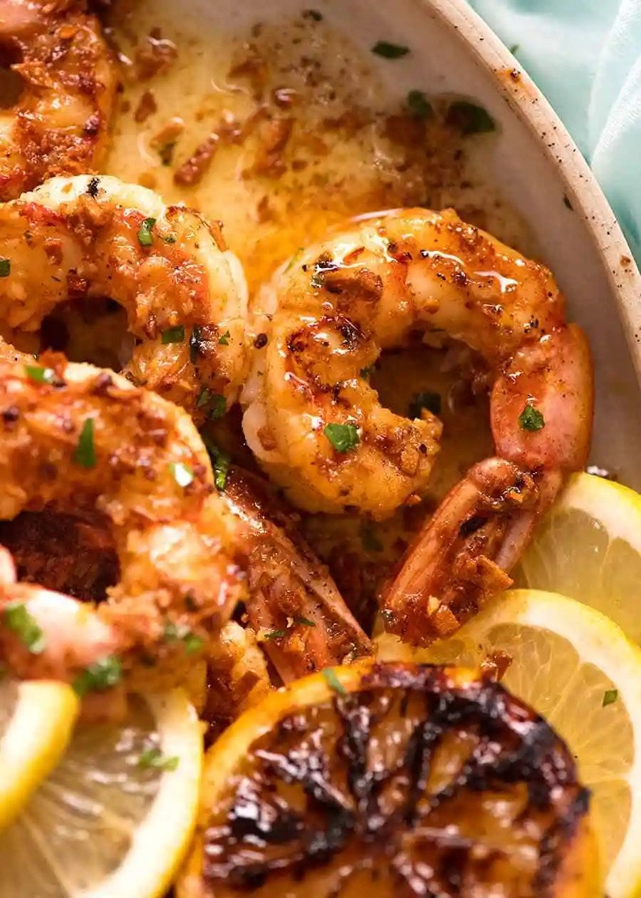

Grilled Shrimp

Description
Crispy grilled shrimp (or prawns) with lemon butter sauce
Seasned and CRISPY on the outside, juicy on the inside, drizzled with a simple-yet-incredible lemon butter sauce with little crispy little golden garlic bit surpises.
Ingredients
Lemon Garlic Butter
- 6 tbsp unsalted butter
- 1/4 tsp salt
- 3 tsp garlic (very finely chopped)
- 1.5 tbsp lemon juice
Shrimp/Prawns
- 1 lb large shirmp/prawns (raw, peeled, and deveined>
- 1 tsp garlic powder
- 1 tsp smoked paprika
- 1/4 tsp cayenne pepper
- 1 tbsp lemon juice
- 1 tbsp oilve oil
- 1/2 tsp salt
- 1/4 tsp pepper
Serving (optional)
- 1 lemon (halved, grilled if desired)
- Lemon wedges or slices
- 2 tbsp finely chopped parsley
Steps
Preparation
- Brush BBQ grills with oil, then preheat on high until very hot.
- If shrimp are small and might fall through grills, skewer them.
Make sauce
- Melt butter in a small saucepan over medium high heat.
- Add garlic and salt. Stir until garlic is LIGHT golden brown, then immediately remove from stove (residual heat will make garlic golden & crispy).
- Stir through lemon.
Shrimp/Prawns
- Pat shrimp dry with paper towels.
- Just prior to cooking, place in bowl, sprinkle/drizzle over remaining ingredients. Toss gently to coat.
- Working quickly, place shrimp on BBQ and cook each side for 2 minutes until golden and crusty.
- Immediately remove shrimp onto serving plate.
Serving
- Drizzle over all the Lemon Garlic Butter, sprinkle with parsley and serve immediately with fresh lemon.
- Crusty bread to mop up the crazy delish butter on the plate is essential!